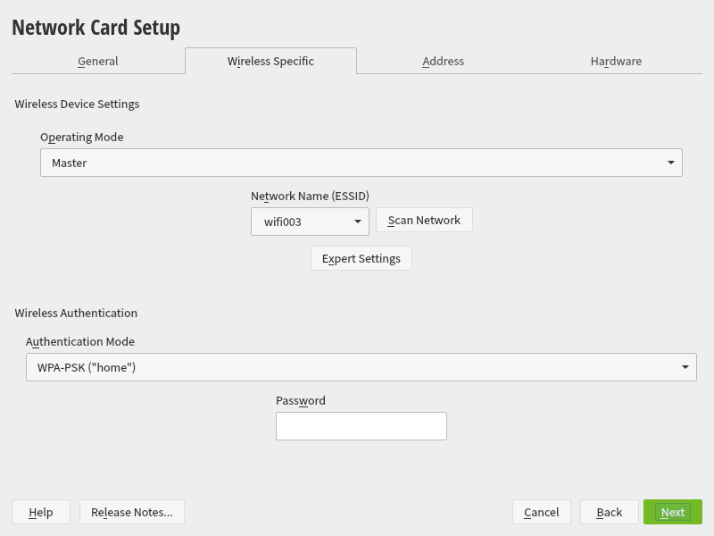
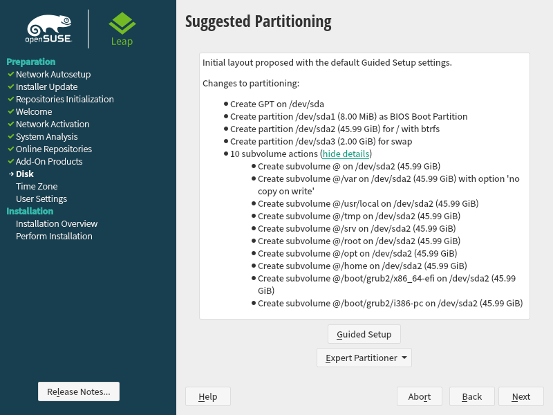

Step by step guide for openSUSE Leap⚓︎
Before you continue⚓︎
This guide targets openSUSE Leap; however the differences between the installers for the openSUSE variants -- like Tumbleweed, MicroOS and Kubic -- are minor and most parts of the installer will be identical.
Warning
Expect slight differences in System Role and Installation Settings.
Minimum system requirements⚓︎
- Any AMD64/Intel* EM64T processor (32-bit processors are not supported).
- 1 GB physical RAM (4 GB or more strongly recommended).
- 10 GB available disk space for a minimal installation, 16 GB for a graphical desktop (more is recommended). In case you plan to use Btrfs snapshots, a minimum of 40 GB for the root partition is recommended.
- Supports most modern sound and graphics cards, 1024 x 768 display resolution (higher recommended).
Precautions⚓︎
- Make sure that you have backed up all your data from the disk where you're planning to install openSUSE to.
- If installing on a separate drive, it is recommended to disconnect the drives not in use. You can always probe a foreign operating systems to Grub from a finalized installation with YaST, but selecting the wrong drive to install openSUSE will overwrite the disk destroying the data on it.
- In case you are using a Network image (Netiso) make sure that you have a strong internet connection. A wired connection is always more reliable than a wifi one.
- If installing on a laptop, it is good practice to plug in the AC charger.
You are now ready to boot the USB drive, which you have previously prepared - as explained in the Preparing the installation media section - and turn on your computer. Boot from the USB drive and select installation from the boot menu.
If you want to see the details of the installation while the installer is booting you can press the ESC key.
Info
On the left you will see a list of items where you can follow the steps you will take next or have already taken. You can always press Back in case you want to change something you configured earlier.
Getting started⚓︎
Welcome⚓︎
Language, keyboard and license agreement⚓︎
Welcome to the YaST installer!
Here you can change the language under Language (Alt+L), change the keyboard layout under Keyboard Layout (Alt+K) and you have a chance to test your selected keyboard layout in the field under Keyboard Test (Alt+y).
The License Agreement informs you on roles, responsibilities and potential limitations.
Network activation⚓︎
Online repositories
If you have an active internet conenction over an ethernet cable connected to your computer, right after you pass the "Language, Keyboard and License Agreement" section you will be prompted, asking if you want to "Activate online repositories now?".It is recommended to select Yes which will provide you with a list of repositories, pre-selecting the main ones in advance and will download updated packages from the online repository during the installation. If you're on a metered connection you press "No".
Network settings⚓︎
You can skip this part if: * you have an active wired internet connection which can be automatically configured by the system; or * you're not planning to use online repositories during the installation process and rely on the packages provided by the DVD installer.
If you don't have a network connection -- because you have don't have an ethernet port or you're using wireless connections only -- you will be prompted to configure your network settings. By default the YaST system installer is using Wicked as the network controller. Keep in mind that if you choose to use Network Manager (NM) instead of Wicked, your network configuration will not be transferred from Wicked to Network Manager.
You will see a list of available network adapters in a list from which you can select the one that you wish to configure and press Edit. In case of configuring a wireless adapter you will see the Wireless Specific tab open. Here you can Scan Network, select the name of your wireless network (SSID), select the authentication mode -- which in most cases will be WPA-PSK "home" -- and input your password.
On the Addresses tab you will be able to configure the IP address of your adapter. You can select Dynamic Address in which case you will receive an address from your router/other dhcp server on your network or Statically Assigned IP Address in which case you need to type an ip address, a subnet mask and a hostname. Click Next when finished.

Info
Wireless networks configured here will be transferred to the finalized system as well, regardless the solution you are choosing to use to manage your connections.
If you configured a statically assigned IP address:
1. Switch to the Routing tab.
2. Press Add, add your default gateway address and select the network adapter to which you want this route assigned to.
3. Press OK then Next to apply your changes and continue the installation.
Online repositories⚓︎
List of online repositories⚓︎
These repositories are the following:
- Update Repository (Non-Oss): Non-free -- as in Free Open-Source Software (FOSS) -- update repository. Provides security and maintenance updates for the distribution. Selected by default.
- Non-OSS Repository: Non-free repository. Provides packages like Steam. Selected by default.
- Main Update Repository: Main free -- as in FOSS -- update repository. Provides security and maintenance updates for the distribution. Selected by default.
- Main Repository: Main free repository provides FOSS only. Selected by default.
- Update Repository (Debug): A repository for those who want to debug application updates for openSUSE, for experts only.
- Untested Updates: Security and maintenance updates that requires testing. Add this repository if you want to participate in testing.
- Source Repository: Provides all source packages in the distribution, for experts only.
- Debug Repository: A repository for those who want to debug applications for openSUSE, for experts only.
Info
Keep in mind that if you're on a metered network and you choose to add the online repos, the installer will download packages with newer versions.
System role⚓︎
At this section of the preparation you can select from a list of predefined use cases which will tailor the system for the selected scenario. It is recommended to take a look at the Choosing the right image page prior to continuing as it provides a brief explanation of desktop environments. Do note if you're using a DVD installer without an active internet connection, some of the listed desktop environments will not be available.
- Desktop with KDE Plasma: the Plasma desktop with KDE applications.
- Desktop with GNOME: the GNOME desktop with GNOME applications.
- Generic Desktop: IceWM, a minimal desktop environment with minimal amount of packages.
- Server: A server installation without providing any graphical environment. Not recommended for inexperienced users.
- Transactional Server: A server installation with a read-only root filesystem in an immutable server style. This will provide atomic, automatic updates and packages can be installed with
transactional-updateonly. Not recommended for inexperienced users.
Select one and press Next to continue.
Disk⚓︎
Suggested Partitioning⚓︎

Guided Setup⚓︎
Expert Partitioner⚓︎
About partition schemes⚓︎
Most Linux distributions use the same "base" partition scheme:
- a bootloader partition, hosting a small program called a bootloader, whose purpose is to take over from the UEFI/BIOS of your computer and set up the initial conditions for your operating system to get running
- a main data partition (or OS partition), which is where the operating system (i.e. Leap) is installed, optionally along with your personal user data.
- (recommended but not necessary) a swap partition of the size of your machine's RAM, + 1 GB
If you are not interested in keeping whatever data or operating system is installed on the target machine, you can simply proceed with the base partition scheme. In that cases, simply run the installer and, on the Disk screen, pick the Suggested Partitioning option, and accept all recommendations there.
Chances are, however, that you will want to install Leap on a disk with an already functional operating system (i.e. Windows, macOS, or another Linux distribution). Or that you will want to install more operating systems alongside Leap easily and reliably in the future. These families of scenarios require some extra steps with respect ot to the "base" partition scheme above.
Installing Leap alongside preexistent Windows partitions⚓︎
If you have Windows installed already, you are likely to have the following (physical) partitions already:
- one 'recovery partition', about 500 MB large, usually using the Fat32 filesystem (we won't consider it further as it is not relevant to what comes next)
- one 'Windows data' partition, usually using the Fat32 filesystem, hosting both Windows and your user data (you want to leave it untouched)
- one 'Windows bootloader' partition, about 100 MB large, using the Fat32 filesystem, hosting the Windows bootloader.
We recommend adding to these physical partitions a single 'Leap OS' partition, at least 40 GB large, using the Btrfs filesystem. Please scroll down to pick a filesystem for data partitions to for more details as to why we recommend Btrfs.
Info
The 'Leap OS' partition will host the Leap bootloader under the /boot subvolume, the operating system directly under / and your user data under the /home subvolume. Do note that, by default, a /home directory will be installed to store your user data. Also by default, this directory will be excluded from the snapshotting system, which means that there will be no Btrfs backups for your user data. This permits rollbacks between snapshots to proceed smoothly, leaving your user data in no incoherent state. This also means that you will need to manually manage your user data back ups.
Alternatively, you might want to install your user data under a separate partition, also mounted as /home, using any file system of your liking. This might come in handy if you plan on using multiple operating systems reading from, and writing to, a single user data partition.
Whichever option you choose, you can refer to the following instructions:
Step by step: Expert partitioning for Windows
- From the Disk view, select Expert Partitioner
- Click the Add Partition button (bottom left-hand side)
- Assign it at least 40 GBs, and set its filesystem to Btrfs, and the mount point to
/. You could label this partition 'Leap OS'. - If it is not set already, set the
/boot/efiflag your 'Windows bootloader' partition (the ~100MB partition probably using the Fat32 filesystem) - (recommended) Add a
swappartition with a size equal to your current RAM + 1 GB.
Info
Even though this makes no difference from the installer's point of view, we recommend assigning meaningful labels to each partition, to make them easier to reidentify them.
The result should look like this:
Check list: Expert partitioning for Windows
- (old) ... some other Windows partitions ...
- (old)
/boot/efi, Fat32, ~ 100 MB - (new)
/, Btrfs, > 40 GB
Warning
Because you are installing the Leap bootloader on a non-btrfs partition, the bootloader will be outside of the scope of the snapshotting system. This means that you won't be able to rollback from a misconfigured bootloader settings, and that in general rolling back won't suffice to fix issues with your bootloader configuration. See Introduction to snapper for details. Consider also the official documentation on snapper rollbacks.
Optionally, you could create a new partition for your user data under /home. This partition would then be easily accessible to other operating systems installed on your machine. If you do so, make sure there is no /home subvolume created inside the partition assigned to /.
Info
After the installation you will want to switch between Leap and Windows. Use these instructions to learn how to reboot to your UEFI. From there you will be able to select Windows or Leap as boot destination.
Installing Leap alongside preexistent Linux partitions⚓︎
You can follow the Step by Step from the previous section, making sure that:
- you flag your already existent bootloader partition as
/boot/efi - (if it already exists on the disk before installing Leap) you flag your user data partition as
/home, or alternatively, that you apply steps (4 & 5) if you need to have a/homepartition outside of/.
Warning
Make sure there is enough space (>100 MB is fine) on whatever partition you're installing your bootloader(s) to. Resize it if necessary.
Check list: Expert partitioning for multiple Linux distributions
- (old) ... some other partitions ...
- (old)
/boot/efi, preferably Btrfs, > 100 MB - (new)
/, Btrfs, > 40 GB
Optionally, you could create a new partition for your user data under /home. This partition would then be easily accessible to other operating systems installed on your machine. If you do so, make sure there is no /home subvolume created inside the partition assigned to /.
Info
After the installation you will want to switch between Leap and whichever operating system you're using. Refer to your machine's manufacturer for instructions. If your machine had Windows preinstalled, use these instructions to learn how to reboot to your UEFI. From there you will be able to select the desired boot destination.
Installing Leap alongside preexistent macOS partitions⚓︎
The installation process for Mac users interested in dual-booting Leap alongside their mac OS partitions is simple:
Step by step: Expert partitioning for Mac
- From the Disk view, select Expert Partitioner
- Click the Add Partition button (bottom left-hand side)
- Create a new Btrfs partition of at least 100 MB for the Leap bootloader. Set it the
/boot/efimount point. You could label this partition 'Leap bootloader'. - Create a new Btrfs partition of at least 40 GBs by repeating (2). Set it the
/mount point. You could label this partition 'Leap OS'. - (recommended) Create a
swappartition with a size equal to your current RAM + 1 GB.
Check list: Expert partitioning for macOS
- (old) ... some macOS partitions ...
- (new)
/boot/efi, Btrfs, > 100 MB - (new)
/, Btrfs, > 40 GB
Optionally, you could create a new partition for your user data under /home. This partition would then be easily accessible to other operating systems installed on your machine. If you do so, make sure there is no /home subvolume created inside the partition assigned to /.
Warning
Some recent Macs have been reported to ship with firmware lock enabled by default. Refer to this guide to disable it.
Info
After the installation you will want to switch between Leap and macOS. Simply hold the alt (option) key immediately after restarting and select Leap or macOS.
Picking a filesystem for data partitions⚓︎
The Leap installer allows you to pick among several filesystems for data partitions, which for the purpose of this section we define as any partition mounted as / (root) or having root on its path (i.e. /home). Among the supported filesystems for data partitions you will find:
- Btrfs
- Ext4
- XFS
However, Btrfs has been the preferred filesystem for all openSUSE distributions for several years. This filesystem boasts a powerful copy-on-write logic, which lies at the heart of openSUSE's approach to stability: Btrfs allows to conveniently create and use snapshots, aka 'restoration points' on Windows (see Introduction to snapper for details). For this reason we highly recommend you to use it for all your data partitions when installing Leap.
Info
Snapshots take advantage of the copy-on-write logic of Btrfs. On a copy-on write filesystem, submitted changes do not overwrite the previous state; instead, changes are 'moved' to a different location on the disk, so that the location of origin is left unchanged. Together with 'deduplication' rules aimed at minimizing redundancies between file changes, this logic allows for the layering of several versions of an entire filesystem, with each layer representing different sets of changes. These sets of changes thus correspond to meaningful actions from the end user's perspective, such as 'before installing package X', 'before creating subvolume Y', etc. Renouncing Btrfs thus means renouncing this feature. Given that Tumbleweed was designed around this feature, it will not work as intended unless you pick this filesystem.
LUKS encryption⚓︎
If you are installing Leap on a laptop, or generally on any machine accessible to untrusted individuals, we highly recommend protecting your data with a full disk encryption. The price to pay is that doing so will entirely wipe out your drive. The obvious advantage, however, is that this will protect your data with a sound security model.
Info
Full disk encryption contrasts with partition encryption in that it protects your entire physical drive using cryptographic techniques. For reasons that go beyond the scope of this document, partition encryption is significantly less secure than full disk encryption. In pictures, partition encryption is like locking your house with an old fashioned padlock and hiding the key in a flowerpot lying on the terrace, while full disk encryption is like locking your house with a digital padlock and keeping the code only in your mind.
To apply full disk encryption while installing, you can either use the Guided Setup feature or manually create the partition scheme first and then apply encryption. If you do the latter, you can simply reproduce the steps listed below:
Step by step: Guided partitioning for LUKS on Btrfs
- Select Guided Setup from the Disk screen
- Check Enable Disk Encryption, and enter a strong password in both text fields
- Then, on the Filesystem Options screen:
- Select Btrfs.
- Tick the Enable Snapshots checkbox (scroll up or see this document to understand the reason why we recommend this).
- Select Btrfs again as File System Type for your any mount point / partition presented to you by the installer.
Alternatively, if you prefer to turn to a different filesystem than Btrfs (typically Ext4) follow the following steps:
Warning
Using Ext4 on either / or /boot will prevent you from using snapper snapshots.
Step by step (Guided Setup: LUKS + LVM + Ext4)
- Select Guided Setup' from the _Disk screen
- Check Enable LVM' and _Enable Disk Encryption, and enter a strong password in both text fields
- Then, on the Filesystem Options screen:
- Select Ext4.
- Tick the Enable Snapshots checkbox (scroll up or see this document to understand the reason why we recommend this).
- Tick the Propose Separate Home LVM Logical Volume checkbox.
- Select Ext4 again as File System Type for your
/homedirectory. - Tick the Propose Separate Swap LVM Logical Volume.
Info
The recommended setup mentioned here makes use of the cryptsetup utility in conjunction with an LVM partition. cryptsetup is a popular and trusted tool in the Linux community implementing the LUKS Linux kernel standard, using the aes-xts-plain64 encryption standard. As for LVM, it is a partitioning scheme that allows your machine to see multiple physical disks as one single (logical) partition, or vice-versa, to see one unique physical disk as multiple (logical) partitions. LVM & LUKS work well together, with LVM considerably simplifying encryption - decryption operations.
Time Zone⚓︎
Clock and Time Zone⚓︎
Select your region and the time zone that you want to use for the system. The hardware clock is by default set to UTC. Select Other Settings for other time settings:
- Manually: Set time and date manually.
- Synchronize with NTP Server: Automatically synchronize time and date with the provided NTP servers which you can initiate right now by selecting "Synchronize now".
- Run NTP as daemon: Run NTP as a daemon so the service always runs and starts automatically on boot and sets the time and date based on the received values from the NTP server.
- Save NTP Configuration: save or discard the NTP configuration into the installed system.
User Settings⚓︎
Local User⚓︎
At this point you can create a local user or skip that by selecting Skip User Creation you can set up a password for root.
You need to fill out the empty fields in order to create a first user:
- User's Full Name: A human-friendly version of your username, which will be shown in login windows for example.
- Username: The actual username for your account. This will be used in all login contexts, whether dialogue boxes or terminal prompts, including virtual console (vc) or over Secure Shell (SSH).
- Password: The password for your user to secure your account.
By default you will also use this newly created account to act as the administrator. The password set there will be set for the root user as well.
Root user
openSUSE creates the root user by default, in contrast to other Linux distributions. To avoid using the same password for both users, untick the Use this password for system administrator checkbox. Clicking Next will take you to the page where you can set a different password for root. At this page you can also import existing SSH public keys. This is useful if you're installing openSUSE over another distribution.
Installation⚓︎
Installation Overview⚓︎
Installation Settings⚓︎
This is the final and probably the an important section of the installer, don't skip it! You can and should review your settings, fine tune your installation if you need to and can even gain access to the YaST Software Installer which can be used to install additional packages or patterns. To change any of the settings just click the headlines (like "Software" or "Security"). After you reviewed the settings you can move on with the installation which will finalize your openSUSE deployment based on your provided informations.
Info
Patterns are a group of packages that allows the user to easily install otherwise complex packages and configurations - like KDE Plasma or Gnome -.